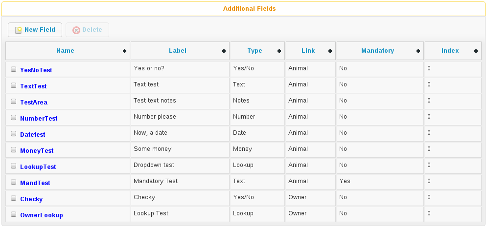
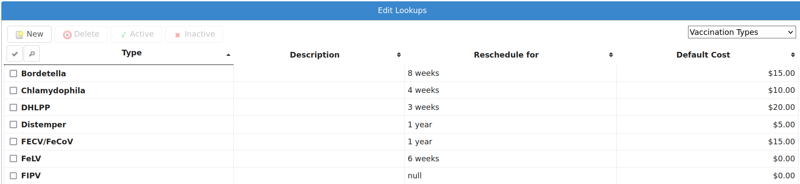
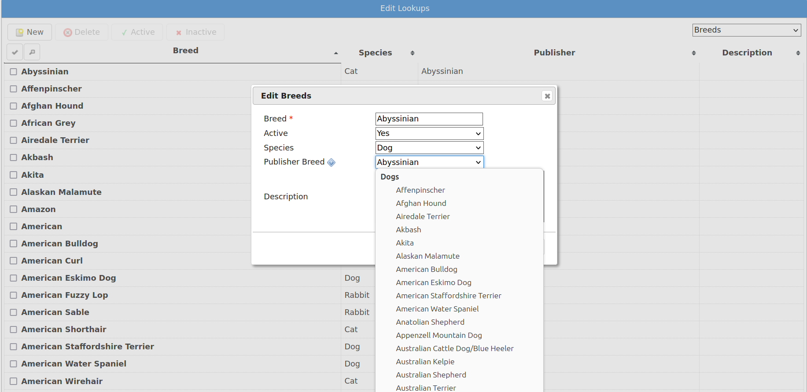
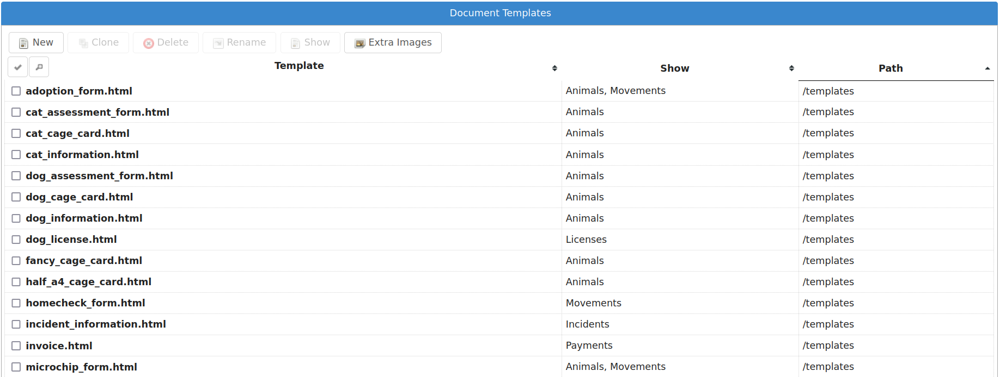
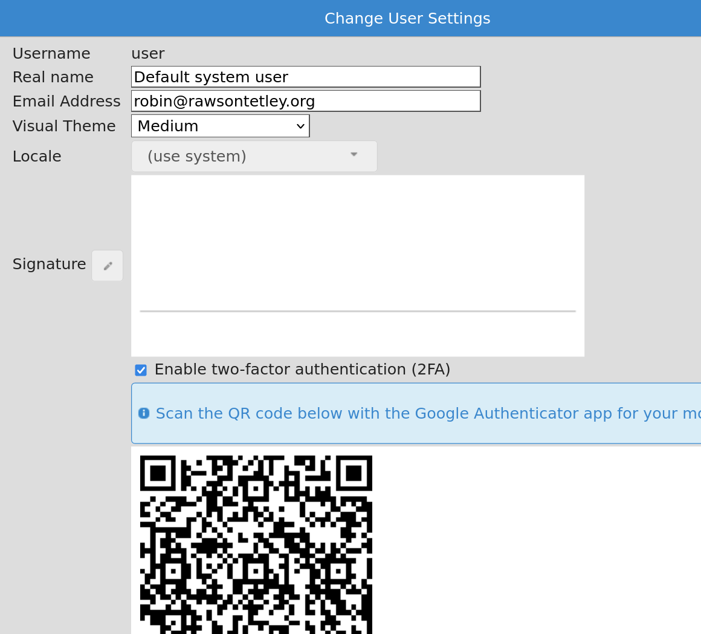
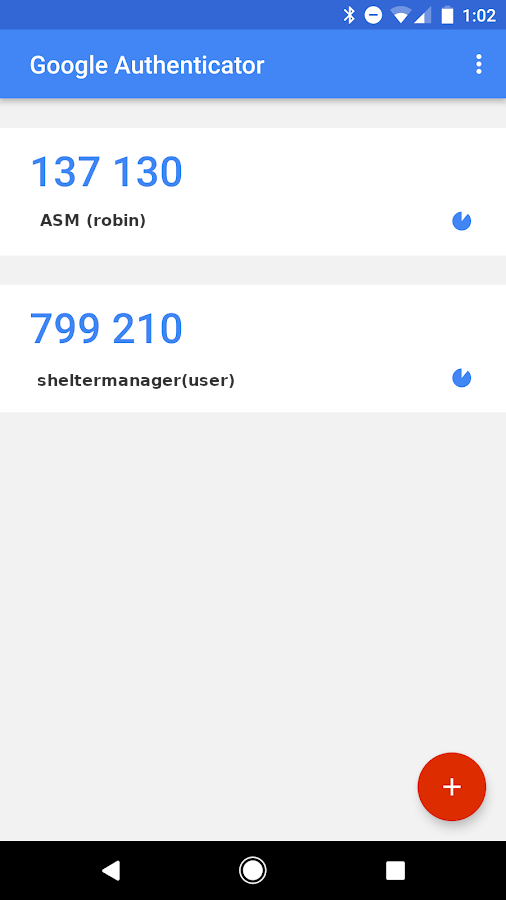
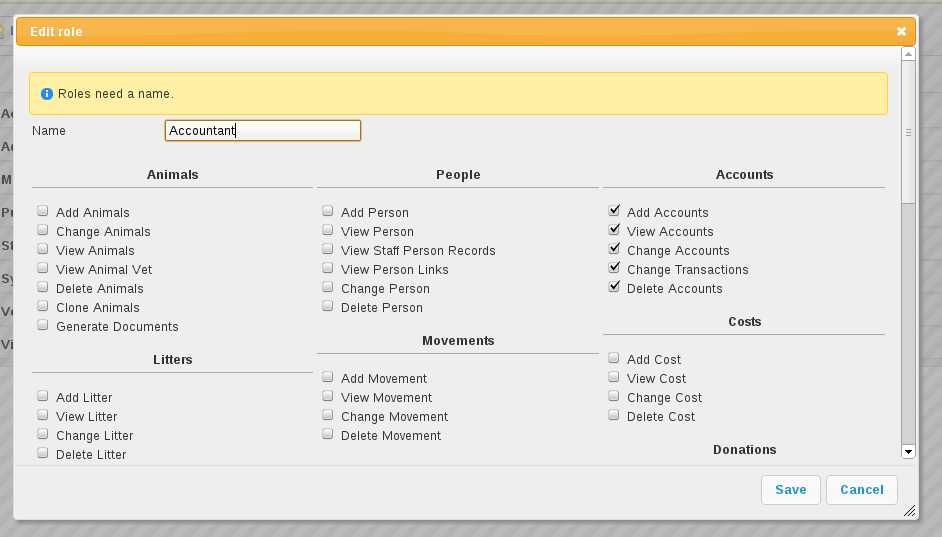
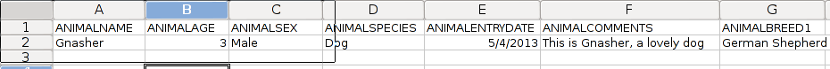

Configuration¶
To configure all areas of the system, you need to look under the top-level Settings menu.
Additional Fields¶
This screen allows you to declare additional fields that will appear on the animal, person, lost animal, found animal and waiting list screens.
Fields have a name, a label, a tooltip, a location, a display index and a default value.
The name cannot contain spaces and is used for referencing the data in document generation - you can use a <<FIELDNAME>> tag to add these additional values to your documents. The label is what will appear on the screen at the side of the field, the tooltip text will appear when you hover your mouse over the control on screen. The display index determines the order your fields are output to the tab and which field the cursor moves to when you press the TAB key on the screen. The default value will populate the field automatically until it is updated.
If you selected a field type of “lookup” or “multi-lookup”, then the use the “Lookup Items” field to supply some values for the dropdown list. These should be pipe-separated, eg: Item 1 | Item 2 | Item 3
If you selected a field type of “Yes/No” then “Lookup Items” can optionally hold a pair of values that ASM will use. You can use this to supply your own text for Yes/No fields in the web publisher and document templates. The default if you don’t supply a Lookup Items for a Yes/No field is 0=Yes|1=No
The “show on new record screens” checkbox makes the field available on the new record entry screen the field is linked to. For example a field created which is linked to Animal-Entry will appear in the entry section when adding a new animal if the checkbox is enabled.
The mandatory checkbox allows you to mark a field as mandatory (ie. Will not let a user save until they have supplied a value). Mandatory additional fields will appear on the new screen for a record where non-mandatory ones do not.
The searchable checkbox allows you to include the additional field in global searches using the search box at the top right of every screen. Pay careful attention to your use of this as unnecessarily marking fields searchable can slow things down. It’s best generally to only make an additional field searchable if that field contains a unique string to identify the record (for example, Driving Licence ID).
The hidden checkbox will hide the field from users so it can no longer used. This is usefull when you no longer want a field to be used but don’t wish to delete the field from the system, as deleting an additional field from the system also deletes all the data it held.
Here’s a worked example: To add a new field to the animal screen to say whether the animal has been tested for kennel cough, create a new additional field and enter the following values:
Name: KennelCough
Label: Kennel Cough Tested?
Tooltip: Tick this box if the animal has been tested for kennel cough
Show on new records screen: No
Mandatory: No
Searchable: No
Hidden: No
Type: Yes/No
Link: Animal - Additional
DisplayIndex: 0
The new field will appear under the Additional tab on the animal screen.
You will be able to reference it in generated animal documentation with the <<KennelCough>> key.
Data for these fields is stored in the “additional” table in the database, the LinkID field holds the animal or person ID (with LinkType being the location, 0 is animal additional tab, 1 is person additional tab).
You can access additional fields in reports by using a subquery. For example, to output a list of all our animal names with the new KennelCough field we defined:
SELECT a.AnimalName,
(SELECT ad.VALUE FROM additional ad
INNER JOIN additionalfield af ON af.ID = ad.AdditionalFieldID
WHERE ad.LinkID = a.ID AND af.FieldName = 'KennelCough') AS KennelCough
FROM animal a
Lookup Data¶
The lookup data screen allows editing of lookups. These are small, standard tables of information used throughout the system for values such as breeds, species, colours, flags, sizes, vaccination types, etc.
As well as creating and deleting them here, lookup data items can be marked inactive so that they cannot be chosen for new records, but are retained for compatibility with existing records.
Some lookups, such as breed, species and color allow you to choose a matching “Publisher” item. These are the items that will be sent to AdoptAPet, PetFinder and other third party adoption sites when transmitting adoptable animal data.
Document templates¶
Here, you can edit the available document templates on the system. For a comprehensive list of tokens for use in templates, see the appendix on wordkeys.
Reports¶

Here, you can create and edit all the available reports on the system. The “Browse sheltermanager.com” button allows you to browse reports from the online repository and choose reports, graphs and mail merges to install.
The “Edit Header/Footer” button allows you to modify the HTML header that is prepended and footer that is appended to reports when they’re run.
Extra Images¶
The “Extra Images” button allows you to upload additional images for use in reports and document templates. The screen will give you a URL for each image so you can reference them in reports and document templates.
There are certain special names for images that the system will use to override some of its standard pictures:
nopic.jpg – this is the image the system will display when an animal does not have any image media. You cannot delete this image, however you can upload a new image called nopic.jpg to replace it.
logo.jpg – this is the image the system will use for the home logo at the top left corner. By default, it’s the ASM logo but it can be changed for your shelter. Ideally, your logo should not be more than 32 pixels high, but the system will scale down larger images.
splash.jpg – this is the image the system will show on the login screen instead of the default ASM splash screens. Your splash image should be 400x200 pixels.
watermark.png – this should be a version of your logo with a transparent background. If you supply a watermark image, then the watermark toolbar button will appear on animal media tabs. This button will add the watermark image to the bottom right of the chosen picture and the animal’s name in the lower left. Note that the original image will be changed, so you should upload images multiple times if you want to retain a copy without the watermark.
System user accounts¶
You may create, edit and delete system users from here. It is recommended that every person who uses Animal Shelter Manager have their own login and user name (when a user is finished, they should navigate to to prepare the system for the next user) - simply to make sure that people do not get other people’s work attributed to them on the audit trails.
Whilst editing a user, you can choose absolutely everything that user may do within the system by assigning one or more appropriate roles. If you set the user type to “superuser”, the user has full administrative privileges to the system. If you choose “normal user”, you will need to set permissions for the user by assigning roles.
If you set an email address for the user and configure email, you can have the system send diary notes and messages via email to users.
If you set a staff person record for the user, they will be forbidden from opening that person record. The idea is to prevent them from viewing their own person record. You can also set the role permission to forbid them opening any other person record with the “Staff” flag if you wish to lock a user from opening any staff person records.
Setting an IP restriction will only allow that user account to login from IP addresses that match the set. IP restrictions should be separated with spaces and can be either complete IPv4 of IPv6 addresses, IPv4 blocks in CIDR notation or IPv6 prefixes. Eg:
192.168.1.0/24 172.16.31.34 2001:db8:abcd:0012
Site and Location Filters¶
Setting a location filter (a group of internal locations) for a user account will prevent that account from seeing or opening animals who are not in those locations when:
Directly viewing an animal record.
Displaying animal links on the home page.
Displaying shelter view, search results or find animal results (basic or advanced).
When adding or editing animals, the internal location dropdown will only show those locations.
When choosing report criteria, they will only be able to select one of the filter locations for any $ASK LOCATION$ tags.
If ASM has been configured with multi-site mode, a site dropdown will also appear on the user record, allowing a site to be assigned to the user. Each internal location belongs to a site and selecting a site is effectively a shorthand for setting a location filter for all the locations that belong to that site. It is an easy way of preventing a user from seeing animals who are not at that site without having to configure individual location filters.
There are a number of “special” location filters, which correspond to animals outside the shelter that you may wish to let your users see.
They all appear at the bottom of the list and allow you to choose from animals who have a particular exit movement type, those who are marked non-shelter, those who the active user is fostering or coordinating adoptions for right now and deceased animals.
Two-Factor Authentication (2FA)¶
ASM supports two-factor authentication for user accounts with the Google Authenticator app (or any time-based one time password generator) for mobile devices.
To enable it, log in with your user account, then choose “Change User Settings” from the user menu at the top right of the screen (the button with your username on it).
Install the Google Authenticator (or other TOTP) app on your mobile device from the Play or iTunes store. Tick the box to enable 2FA and the screen will show you a QR code. In the Google Authenticator app, click the add button and choose “QR Code”, then scan the on screen code with your camera.
An entry will appear in Google Authenticator for ASM (if you are self hosted) or sheltermanager (for sheltermanager.com customers) with your username and a time-based one time passcode that will update every 30 seconds. When you login in future, you will be challenged for this 2FA code from your mobile device.
If you are ever locked out of your account because your mobile device is no longer available, you can disable 2FA by resetting your password from either the login screen, or via
User roles¶
Roles can be assigned to individual users and represent sets of permissions. When you edit a role, ASM will show you a huge number of tickboxes to determine what any user with that role is allowed to do within the system.
Export Animals as CSV¶
ASM can export your animal data to a CSV file. This format of CSV file is the one used by the “Import a CSV file” screen. You can use this function to export data to a file that you can give to other ASM users to import into their database.
When importing CSV files produced by this function, make sure you turn on the “Merge duplicates” option. It is necessary because files generated by this export use repeated lines of animal data to contain the medical, movement and financial history.
A number of pre-set filters are available. You can choose to export all animals in your database, just those who are currently on the shelter or a selection of the current on shelter animals.
Import a CSV file¶
ASM can import data from a CSV file.
Microsoft Excel, OpenOffice Calc, Gnumeric, Google Docs and many other spreadsheet products can all export individual sheets in CSV format.
Note
The screen produces CSV files in a format that ASM can import. This can be used to export and import animals from one ASM database to another.
The CSV file should have a header row that contains column names that ASM recognises (see Appendix: CSV file import fields)
Each row of data can contain animal, person, movement and donation information. If movement data is present, then an adoption (or other movement if MOVEMENTTYPE is set) record will be created to link the animal and person in the row together. If donation data is present in the row, a donation will be created and linked to the person (and movement if one was available).
If a column is not supplied, then ASM will use the default as set under the default tab in Settings-Options. For example, not setting ANIMALTYPE will cause ASM to use the default animal type.
ASM prefers the ANIMALDOB field to set the date of birth, but if you don’t have it, it will calculate the date of birth from the ANIMLAGE field (which it assumes to be an integer number of years). If neither are set, it will use today’s date as a last resort.
If ANIMALBREED2 is not set, the animal is assumed to be a purebreed of ANIMALBREED1. If ANIMALBREED2 is set and is different from ANIMALBREED1, then the crossbreed flag will be set on the resulting animal.
When importing animals and people, ASM will check the database for animals with the same ANIMALCODE and people with the same name/address or email/cell phone to find duplicates. Certain fields (see Appendix: CSV file import fields) will be updated if an existing record is found and a new record will not be created.
If the “Create missing lookup values” option is on, and the file contains a value that is not present in the database (for example, if you have “Goldfish” in the ANIMALSPECIES column, but it isn’t a species in your database), then it will be created during the import and the animal linked to it.
If the “Clear tables before importing” option is on, ASM will remove all data from the animal, person, movement and donation tables before doing the import. This delete cannot be undone, so exercise caution when using this option as you can wipe out your entire database!
Import a PayPal CSV file¶
ASM can import data from CSV files produced by PayPal’s activity reporting.
The import process allows you to choose a payment type and method for the imported transactions and any flags you’d like to assign to people records created or updated as a result of the import. The import will use the person’s email or name and address to try and automatically attach payments to existing person records where possible. If an existing record cannot be found, a new person will be created.
The net amount will be used as the payment amount and the PayPal transaction fee will be recorded with the payment.
It is possible to override the payment type on a per transaction basis by editing the PayPal CSV file and adding a column named “ASM Payment Type”. You can then assign values from your payment types lookup in this column. Note that they must match exactly (same case) the payment type name from your lookup. If the column does not exist, contains a blank or the system could not find a match then the payment type from the import screen will be used.
Import a Stripe CSV file¶
Similar to PayPal, ASM can import data from CSV files exported with the Export button on Stripe’s payments screen.
The Stripe fee will be recorded with the payment and the payment amount will have the fee deducted.
Trigger Batch Processes¶
ASM runs various tasks overnight to keep animal records upto date and generate cached versions of complex reports and figures.
Ordinarily, users should have no need to trigger these batch processes manually, however after importing CSV data or making bulk data changes with queries, animal locations, person flags and historic figures data can get out of sync and need to be recalculated/regenerated.
Some of these processes can take many minutes to run and may block use of the database for other users. They should be used sparingly.